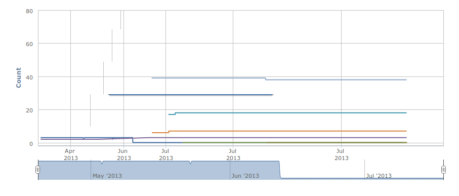
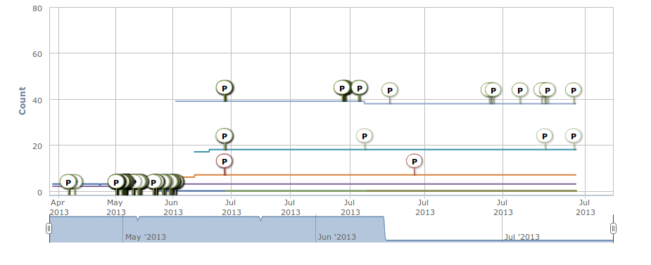
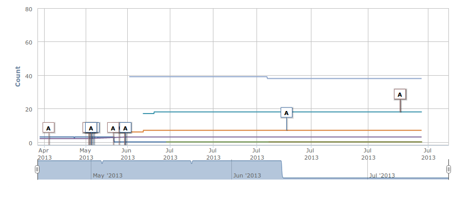
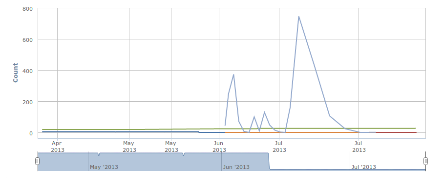
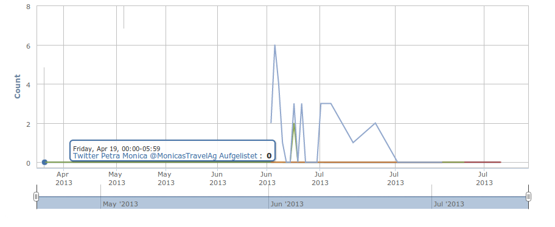
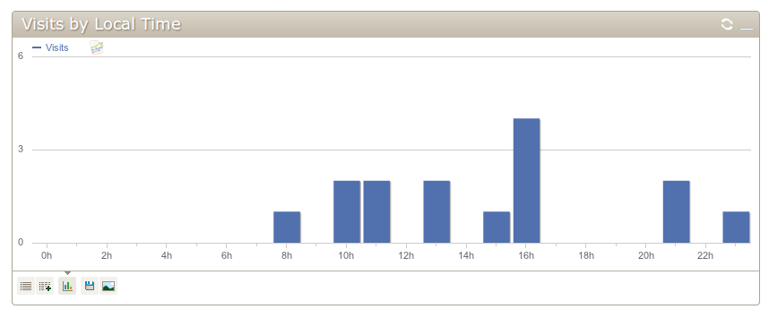

Analytics
Master Graph
What is User Graph?
User Graph indicates the development of the amount of fans, followers and subscribers of the connected social media channels

What is Post Detail Graph ?
Post Detail Graph indicates when a post has been published in order to display the development of users.

What is App Installation Graph ?
App Installation Graph indicates when an app has been published on order to display the development of users.

What is Activity Graph ?
Reach Graph indicates the amount of page views of the connected social media channels.

What is Activity Graph ?
Activity Graph indicates the amount of engaged users of the connected social media channels.

What is App Analytics Graph ?
App Analytics shows the information of those who visit your Facebook Apps

- current week view
- current month view
- last three month view
- current year view
- show all data
customized time period
From:
To:
What is App Analytics Graph ?
App Analytics shows the information of those who visit your Facebook Apps
Facebook Likes

App Analytics Basic Small
App Travel Report